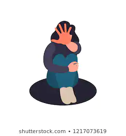

The fight against domestic violence in our society is as important as the fight against crime. Unfortunately, many cases of violence against family members, regardless of the gender or age of the victim, are suppressed. Victims do not tell anyone about this, and even if they try, the case rarely goes to court. In addition, victims of domestic violence are "branded" with a label called "self-blame" just as often as victims of sexual violence. This website was designed to get exposure for problems of women in Kazakhstan and as additional help for victims of abuse
Experts note that often women in Kazakhstan are silent about family dramas. Many suffer domestic violence because of financial dependence on a tyrant husband, fear of being judged by relatives, or in the hope of keeping the family together. Calling the police is just a small step in solving this global problem. Often such cases "hang in the air" on the principle of "it is just a couple's fight.
With the onset of the epidemic and the introduction of strict quarantine measures, the domestic violence statistics curve made a 20% jump upwards.
The Union of Crisis Centers of Kazakhstan, an umbrella organization of 16 nongovernmental organizations (NGOs), reports that partners kill hundreds of women in Kazakhstan each year and that domestic violence takes place in one out of every eight families in Kazakhstan. For the first nine months of 2019, Kazakhstan’s administrative courts received 12,146 cases of “infliction of light bodily harm” and appeared to issue penalties in 4,057 cases: 2,687 with fines; 1,363 with arrest; and 7 with warnings. Administrative courts received 5,266 cases of “battery” and issued penalties in 1,264 of these cases: 696 with fines; 564 with arrest; and 4 with warnings.
According to 2017 government statistics, 17 percent of all women ages 18 to 75 have experienced physical or sexual violence by a current or former husband or partner.
Human Rights Watch also found that government-run crisis centers do not meet international standards for services for domestic violence survivors, and that many women in Kazakhstan still do not know where to turn for help. In the crisis centers Human Rights Watch visited, researchers found insufficient security procedures and heard testimony that crisis center staff blamed survivors for “provoking” their partners and urged them to reconcile with their abusers.Staff at both the government and nongovernmental crisis centers similarly said that police do not take domestic violence cases seriously, and do not treat domestic violence cases as a crime.
Gulim, a 26-year-old mother of one, said that after she filed a complaint against her husband for beating her in 2019, an Almaty court fined her husband 37,000 tenge (US$99) to be paid to the state. Gulim felt she was denied justice: “Why [does he have to pay] the state? I don’t understand. I was the one beaten up. Turns out it is profitable for the government [to fine him], compared to just locking him up.”
Ayana said that, after her husband received an administrative penalty for abusing her, he told her on the telephone, “[B]ecause of your complaint, now I have to pay 100,000 tenge (US$258) and I would rather have it to spend on my children.” Ayana said, “Really, it is better for me if he spends this money on [our] children.”
Almost all the lawyers, women’s rights activists, and survivors interviewed said that social pressure, fear of recurrent abuse, stigmatization, and economic dependence prevent survivors from seeking protection, assistance, and justice. The Interior Ministry said in its letter that many women do not report domestic violence or drop their complaints because of psychological pressure by abusers and because they are economically dependent on abusers.
Human rights advocate, activist and leader of “Ne molchi” (Don’t be Silent) movement Dina Smailova says that before the lockdown her organization’s helpline (8 705 151 0000) used to receive mainly calls relating to sexual violence. She points out that reports of domestic violence were there, but not as many as now. “There are situations when a woman is all covered in bruises but cannot obtain a protective order to have her abuser isolated from her. Despaired, she comes to the police on her own only to be sent back home and told that she can’t walk around during quarantine. At the same time, we see that quite decisive legal actions are being taken against people violating lockdown rules. I think that the same decisive measures should be taken against domestic abusers,” says Dina. “If the media publish stories, including photos, of domestic abusers receiving a fair punishment, then the violence perpetrators will think twice and women will feel safer.”